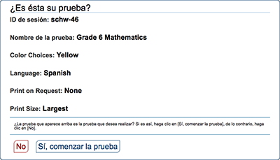
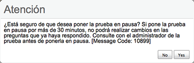
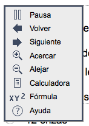
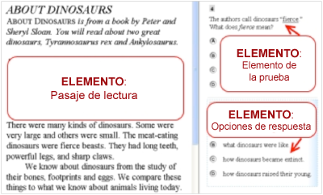
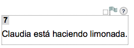
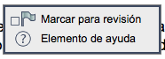
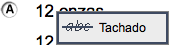
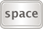

*ver a continuación las instrucciones detalladas sobre esta herramienta con un teclado
Pantallas de selección de pruebas y ventanas emergentes durante las pruebas
Usa estos comandos del teclado para seleccionar opciones en las páginas anteriores a la prueba o en los mensajes emergentes que aparecen durante la prueba. Por ejemplo, si ves una pantalla con los botones [No] o [Sí], deberás navegar hacia ese botón para seleccionarlo.
| Comando del teclado | Función |
|---|---|
| Ir a la siguiente opción | |
| + |
Ir a la opción anterior |
| Seleccionar la opción sombreada |
Ejemplos de la pantalla de selección de pruebas y mensajes emergentes durante la prueba


Menú global
El menú global contiene todas las opciones que se muestran en la parte inferior de la pantalla de la prueba del estudiante.
- Presiona las teclas + para acceder al Menú global. El menú aparecerá en la pantalla.
- Usa las teclas de dirección Arriba y Abajo del teclado para moverte entre las opciones del menú. Cada opción se resaltará a medida que dirijas la flecha hacia arriba o abajo.
- Presiona la tecla
 para seleccionar la opción del menú resaltada.
para seleccionar la opción del menú resaltada. - Presiona la tecla [ESC] para acceder al Menú global.
Nota: el Menú global puede cambiar según la prueba que estás realizando. Por ejemplo, el Menú global en una prueba de matemáticas puede incluir una calculadora, que no aparecerá en las pruebas de lectura.
Menú global de muestra para una prueba de matemáticas
Menús contextuales
Los menús contextuales contienen las opciones disponibles para cada área de la página de la prueba. Estas áreas de una página de prueba se denominan "elementos".
Los elementos de una prueba incluyen:
- Pasajes de lectura
- Elementos de la prueba
- Opciones de respuesta (A, B, C y D)
Página de prueba de muestra
Cada elemento tiene su propio menú contextual. Para ver el menú contextual de un elemento, debes navegar hacia ese elemento.
- Haz clic en la tecla [TAB] para navegar entre los elementos de la prueba (y el pasaje de lectura, si hay alguno).
- Haz clic en [CTRL] + [TAB] para cambiar de un elemento de la prueba a cada opción de respuesta.
Elemento seleccionado

Cuando estás en el elemento deseado, verás un borde gris claro alrededor del texto.
- Presiona las teclas +
 del teclado. Aparecerá el menú contextual para ese elemento.
del teclado. Aparecerá el menú contextual para ese elemento. - Usa las teclas de dirección Arriba y Abajo del teclado para moverte entre las opciones del menú. Cada opción se resaltará a medida que dirijas la flecha hacia arriba o abajo.
- Presiona la tecla
 para seleccionar la opción del menú resaltada.
para seleccionar la opción del menú resaltada. - Presiona la tecla [ESC] para acceder al Menú contextual.
Menú contextual de muestra para el elemento/pregunta de la prueba
Nota: es posible que esta imagen no coincida con lo que ves en la pantalla.
El menú contextual de una opción de respuesta puede mostrar opciones diferentes a las de un elemento de la prueba o un pasaje de lectura.
Menú contextual para una opción de respuesta
Selección de texto con el teclado
- Enfócate en el elemento que contiene el texto que deseas seleccionar. Un pasaje de lectura, un objeto o una opción de respuesta son los distintos tipos de elementos que pueden aparecer en la pantalla de la prueba.
- Presiona + para abrir el menú contextual.
- Selecciona Habilitar selección de texto (Enable Text Selection) de la lista de opciones disponibles. Aparecerá un cursor intermitente.
- Usa las teclas de dirección para mover el cursor hacia el comienzo del texto que deseas seleccionar.
- Mantén presionada la tecla
 y usa las teclas de dirección para seleccionar el texto. El texto seleccionado aparecerá sombreado.
y usa las teclas de dirección para seleccionar el texto. El texto seleccionado aparecerá sombreado. - Presiona + para acceder al menú contextual. Selecciona la función que deseas usar para el texto seleccionado (por ejemplo, las herramientas Resaltador o Lector).
| Comando del teclado | Función / Detalles |
|---|---|
| Presionar la tecla [Tab] para moverse entre el banco de objetos, los botones de la parte superior de la pantalla Borrar (Delete), Agregar punto (Add Point), Conectar línea (Connect Line), Agregar flecha (Add Arrow), Agregar línea (Add Line), y el espacio de respuesta principal. El espacio o el botón "activo" mostrarán un borde para que se diferencie. | |
| Presionar la tecla [Enter] para moverse entre los objetos (imágenes, puntos, líneas y flechas) del espacio de respuesta. El objeto "activo" mostrará un borde para que se diferencie. | |
|  | Seleccionar objeto: Presionar la barra espaciadora [Space bar] para seleccionar el objeto o el botón "activo" (el que muestra un borde). Si seleccionas un objeto o agregas un punto, una línea o una flecha, se moverá hacia el espacio de respuesta, en el extremo superior izquierdo. También tendrá un borde azul para mostrar que aún está "activo". Borrar objeto: Usar la barra espaciadora [Space bar] para borrar un objeto (después de seleccionar la opción Botón borrar [Delete Button] y mover el objeto que se desea eliminar. |
| Mover el objeto hacia la izquierda. | |
| Mover el objeto hacia la derecha. | |
| Mover el objeto hacia arriba. Para los elementos que tienen un banco de objetos, usar la flecha ↑ para navegar entre los objetos disponibles. El objeto seleccionado tendrá un fondo azul. |
|
| Mover el objeto hacia abajo. Para los elementos que tienen un banco de objetos, usar la flecha ↓ para navegar entre los objetos disponibles. El objeto seleccionado tendrá un fondo azul. |
|
+ [flecha de dirección] |
Mover el objeto a una distancia menor (izquierda, derecha, arriba o abajo). |